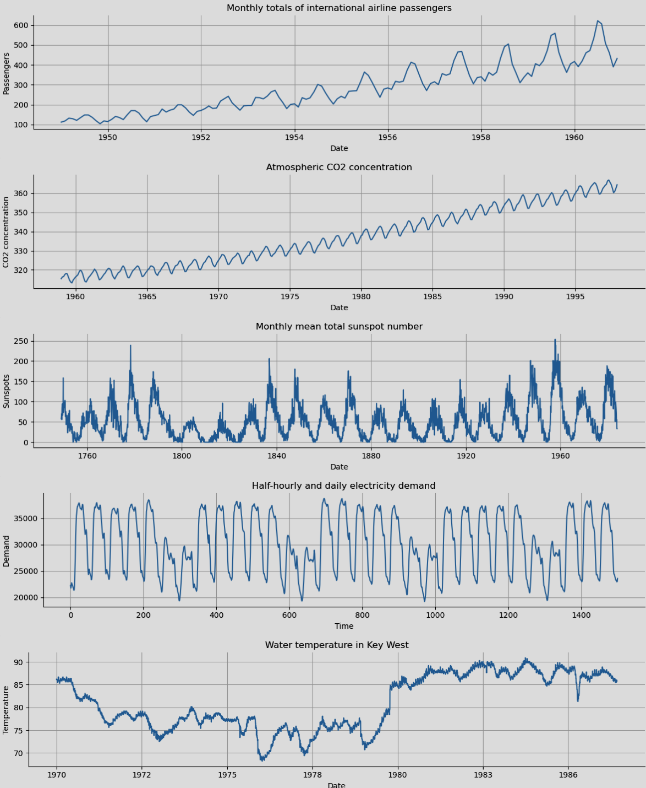
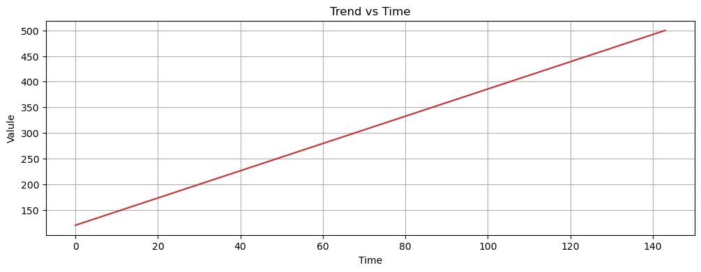
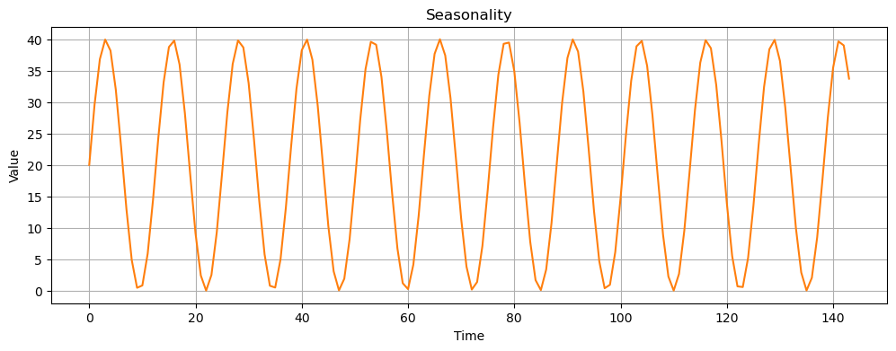
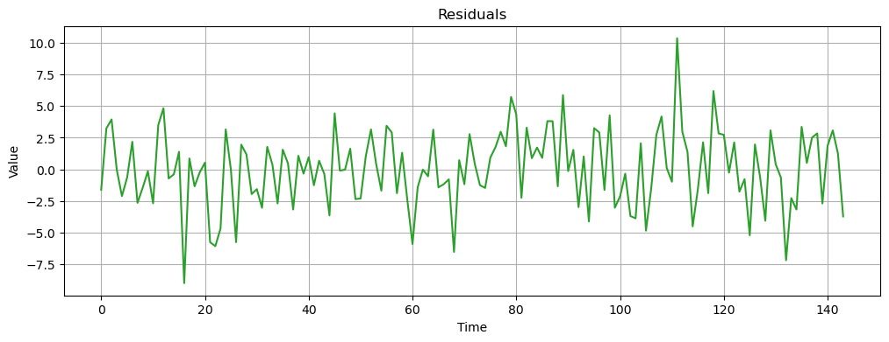
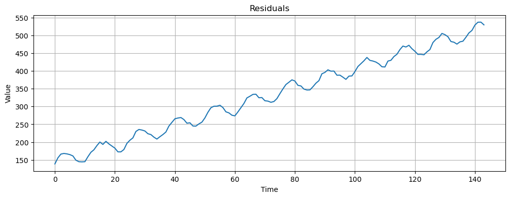
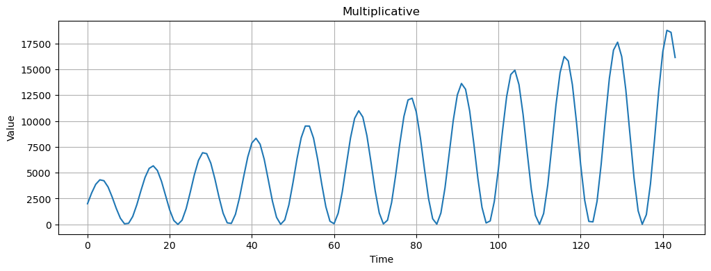
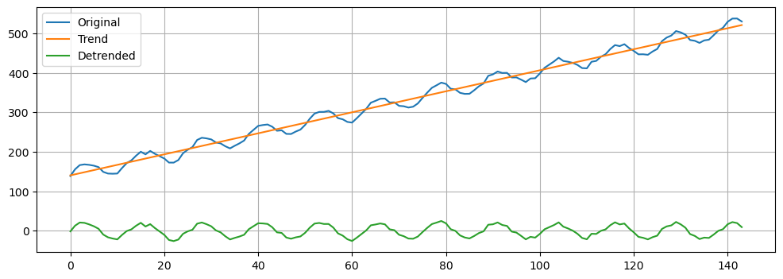
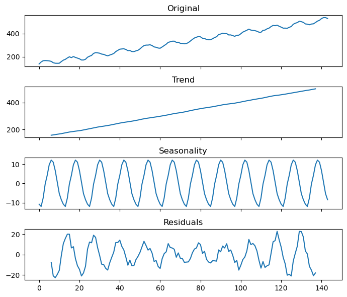
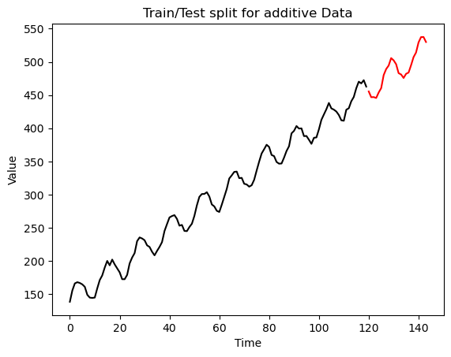
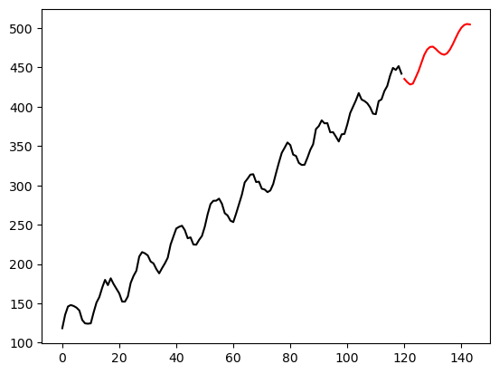

Python timeseries analysis with statsmodels and ARIMA¶
Prerequisites¶
For this exercise we will need the statsmodels and pmdarima
libraries.
conda install -c conda-forge statsmodels pmdarima
Sources for further exploration:
- https://www.timescale.com/blog/how-to-work-with-time-series-in-python
- https://filippomb.github.io/python-time-series-handbook/notebooks/01/introduction_to_time_series.html
- https://builtin.com/data-science/time-series-python
Resource for online time series data¶
Imports¶
import numpy as np
import matplotlib.pyplot as plt
import statsmodels.api as sm
from statsmodels.tsa.seasonal import seasonal_decompose
from statsmodels.tsa.stattools import adfuller
from statsmodels.tsa.arima.model import ARIMA
# One of the modules reports prodigious warnings so we will just hide these ;)
import warnings
warnings.filterwarnings("ignore")
What is time series data?¶
- A time series is a sequence of data points organized in time order.
- Usually, the time signal is sampled at equally spaced points in time.
- These can be represented as the sequence of the sampled values.
- We refer to this setting as discrete time.

Time series components¶
We will start learning about time series data by building up a synthetic timeseries dataset to understand the different components of time series, which are often assumed to be composed of three components:
- Trend: the long-term direction.
- Seasonality: the periodic behavior.
- Residuals: the irregular fluctuations.
Trend¶
- Trend captures the general direction of the time series.
- For example, increasing number of passengers over the years despite seasonal fluctuations.
- Trend can be increasing, decreasing, or constant.
- It can increase/decrease in different ways over time (linearly, exponentially, etc…).
time = np.arange(144)
trend = time * 2.65 +100
plt.figure(figsize=(12, 4))
plt.plot(time, trend, color='tab:red')
plt.xlabel("Time")
plt.ylabel("Valule")
plt.grid()
plt.title("Trend vs Time");

Seasonality¶
- Periodic fluctuations in time series data that occur at regular intervals due to seasonal factors.
- It is characterized by consistent and predictable patterns over a specific period (e.g., daily, monthly, quarterly, yearly).
seasonal = 20 + np.sin( time * 0.5) * 20
plt.figure(figsize=(12, 4))
plt.plot(time, seasonal, color='tab:orange')
plt.xlabel("Time")
plt.ylabel("Value")
plt.grid()
plt.title("Seasonality");

Residuals¶
- Residuals are the random fluctuations left over after trend and seasonality are removed from the original time series.
- One should not see a trend or seasonal pattern in the residuals.
- They represent short term, rather unpredictable fluctuations.
residuals = np.random.normal(loc=0.0, scale=3, size=len(time))
plt.figure(figsize=(12, 4))
plt.plot(time, residuals, color='tab:green')
plt.xlabel("Time")
plt.ylabel("Value")
plt.grid()
plt.title("Residuals");

Timeseries Models & Decomposition¶
Time series components can be decomposed with the following models:
- Additive decomposition
- Multiplicative decomposition
- Other more complicated models that we won’t discuss
Additive model¶
Additive models assume that the observed time series is the sum of its components:
X(t) = T(t) + S(t) + R(t)
where:
- X(t) is the time series
- T(t) is the trend
- S(t) is the seasonality
- R(t) is the residual
Additive models are used when the magnitudes of the seasonal and residual values do not depend on the level of the trend.
additive = trend + seasonal + residuals
plt.figure(figsize=(12, 4))
plt.plot(time, additive, color='tab:blue')
plt.xlabel("Time")
plt.ylabel("Value")
plt.grid()
plt.title("Residuals");

Multiplicative Model¶
Assumes that the observed time series is the product of its components:
X(t) = T(t) * S(t) * R(t)
Multiplicative models are used when the magnitudes of seasonal and residual values depends on trend.
multiplicative = trend * seasonal # * np.abs(residuals) # <- Plotting w/o residuals to show the pattern
plt.figure(figsize=(12, 4))
plt.plot(time, multiplicative, color='tab:blue')
plt.xlabel("Time")
plt.ylabel("Value")
plt.grid()
plt.title("Multiplicative");

De-trending a time series¶
Now we have seen how to build up a time series from component parts. In reality this is not the way that it works, typically we will have a timeseries dataset from observations and we would like to figure out what the different components are. A very simple, yet often useful, approach is to estimate a linear trend. A detrended time series is obtained by subtracting the linear trend from the data. The linear trend is computed as a 1st order polynomial.
slope, intercept = np.polyfit(np.arange(len(additive)), additive, 1) # estimate line coefficient
trend = np.arange(len(additive)) * slope + intercept # linear trend
detrended = additive - trend # remove the trend
plt.figure(figsize=(12, 4))
plt.plot(additive, label='Original')
plt.plot(trend, label='Trend')
plt.plot(detrended, label='Detrended')
plt.grid()
plt.legend();

Additive Decomposition¶
Next, we will use
seasonal_decompose
to isolate the main time series components.
We need to specify an integer that represents the main seasonality of the data. By looking at the seasonal component, we see that the period is approximately 12 time steps long, so set period=12.
From the documentation: “This is a naive decomposition. More sophisticated methods should be preferred.”
additive_decomposition = seasonal_decompose(x=additive, model='additive', period=12)
# A helper function to plot the original time series, and the 3 decomposed components
def seas_decomp_plots(original, decomposition):
_, axes = plt.subplots(4, 1, sharex=True, sharey=False, figsize=(7, 6))
axes[0].plot(original)
axes[0].set_title('Original')
axes[1].plot(decomposition.trend)
axes[1].set_title('Trend')
axes[2].plot(decomposition.seasonal)
axes[2].set_title('Seasonality')
axes[3].plot(decomposition.resid)
axes[3].set_title('Residuals')
plt.tight_layout()
plt.show()
seas_decomp_plots(additive, additive_decomposition)

Challenge exercise¶
Implement seasonal_decompose for the multiplicative model and evaluate
the results.
Forecasting with Auto Regressive Integrated Moving Average (ARIMA)¶
Time series forecasting allows us to predict future values in a time series given current and past data. Python offers a variety of libraries and techniques for time-series forecasting, and one popular method is the autoregressive integrated moving average (ARIMA) model. ARIMA is a powerful and widely used approach that combines the three following components to capture the patterns and trends in time-series data: 1. Autoregression (AR) 2. Differencing (I) 3. Moving Average (MA)
Here, we will use the pmdarima package
ARIMA method to forecast change in
time for our synthetic additive dataset, which allows us to forecast
future values in terms of a linear combination of past values.
statsmodels also has an
ARIMA
module but it’s slightly more complicated and pmdarima does a lot nice
things to make this method easier for us.
## Get the length of our input time series
max_x = additive.shape[-1]
max_x
144
Test/train split¶
First we need to split our additive data into a test and train set, with the idea that we will train ARIMA on the train data. Once the model is fitted, you can use it to forecast future values by calling the predict method, then we can compare the prediction to the ‘true’ values to see how well it did.
# We'll split at index 120, which will leave 24 timepoints to predict in the train set
split_idx = 120
# For plotting we need x-coords for the full dataset so make a list of [1, 2, .., max_x]
xs = list(range(max_x))
# Split the train data and the x-coords
train = additive[:split_idx]
xs_train = xs[:split_idx]
# Split the test data and the remaining x-coords
test = additive[split_idx:]
xs_test = xs[split_idx:]
# Plot the test and train data to see the 'truth' value of the test set
plt.plot(xs_train, train, color = "black")
plt.plot(xs_test, test, color = "red")
plt.title("Train/Test split for additive Data")
plt.ylabel("Value")
plt.xlabel("Time")
Text(0.5, 0, 'Time')

Train the ARIMA model and predict future values¶
auto_arima has a very similar API to scikit-learn which we have seen
previously, with fit() and predict() methods for the ARIMA model
from pmdarima.arima import auto_arima
# Train the model on the training data
model = auto_arima(train)
model.fit(train)
# Predict the next n timepoints corresponding to the length of the test set
forecast = model.predict(n_periods=len(test))
# Plot the results
plt.plot(xs_train, train, color = "black")
plt.plot(xs_test, forecast, color = "red")

Pretty Good!
Challenge exercise¶
The ARIMA model does pretty well when the size of the training set is
large (>100 samples) and the size of the forecast is small. Try increasing
the size of the n_periods to forecast and plotting this. Think about
how the model will behave as predictions go farther into the future.
How long will it take before the predictions start to look like noise?
NB: You will need to update the xs_test x-coords like this:
# Lets say you want to predict 100 timepoints in the future you can
# update the xs_test x-coords like this
new_test = 100
xs_test = range(max_x, list(range(new_test)))
Challenge exercises¶
The statsmodels library has several different timeseries datasets
built in. Here you will load two different time series example datasets
and work through the analysis that we just practiced above.
- Plot the two time series.
- Determine if the time series look like additive or multiplicative models.
- Based on your judgement decompose each time series into component parts (assume a period of 12).
- Split each dataset into test and train sets, train an ARIMA model and predict the held-out test set. Compare the prediction to the ‘true’ value. How does ARIMA perform on each of these datasets?
import statsmodels.api as smf
ts_A = sm.datasets.get_rdataset("AirPassengers", "datasets").data["value"].values
print(len(ts_A))
ts_B = sm.datasets.get_rdataset("co2", "datasets").data["value"].values
print(len(ts_B))
144
468